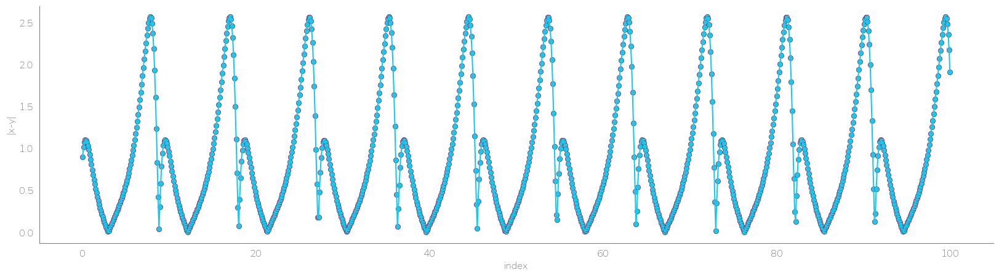

Available out of box models¶
[1]:
import os
current_wd = os.getcwd()
os.chdir(current_wd.split("scikit-identification")[0] + "scikit-identification")
from skmid.load_system import chua_circuit, lorenz_system, lotka_volterra, magnetic_levitation_system, van_der_pol_oscillator
os.chdir(current_wd)
[2]:
import numpy as np
import pandas as pd
import matplotlib.pyplot as plt
import seaborn as sns
[3]:
if "skmid" in plt.style.available:
plt.style.use("skmid")
Chua’s circuit¶
[4]:
chua = chua_circuit()
print(chua.keys())
print(chua["description"])
chua["output_sim"].head()
dict_keys(['input_sim', 'state_sim', 'output_sim', 'model_function', 'description'])
('Lorenz attractor: The equations relate the properties of a two-dimensional fluid layer uniformly warmed from below and cooled from above. It evolves in time according to the differential equation:dx/dt = sigma * (y - x)', 'dy/dt = x*(rho - z) - y,dz/dt = x*y - beta*z', 'where sigma=10, rho=20 and beta=8/3 are system parameter, x is proportional to the rate of convection,y to the horizontal temperature variation, and z to the vertical temperature variation.', 'The data are generated by RungeKutta4(model=model, fs=100).simulate(x0=[1, 1, 1], N_steps=5000)Further details https://en.wikipedia.org/wiki/Lorenz_system')
[4]:
| y1 | y2 | y3 | |
|---|---|---|---|
| 0.00 | 0.700000 | 0.000000 | 0.000000 |
| 0.01 | 0.716343 | 0.007042 | -0.000984 |
| 0.02 | 0.734173 | 0.014164 | -0.003951 |
| 0.03 | 0.753534 | 0.021361 | -0.008923 |
| 0.04 | 0.774472 | 0.028628 | -0.015920 |
[5]:
_ = sns.scatterplot(data=chua["output_sim"],
x="y1",
y="y2")
Lorenz system¶
[6]:
lorenz = lorenz_system()
print(lorenz.keys())
print(lorenz["description"])
lorenz["output_sim"].head()
dict_keys(['input_sim', 'state_sim', 'output_sim', 'model_function', 'description'])
('Lorenz attractor: The equations relate the properties of a two-dimensional fluid layer uniformly warmed from below and cooled from above. It evolves in time according to the differential equation:dx/dt = sigma * (y - x)', 'dy/dt = x*(rho - z) - y,dz/dt = x*y - beta*z', 'where sigma=10, rho=20 and beta=8/3 are system parameter, x is proportional to the rate of convection,y to the horizontal temperature variation, and z to the vertical temperature variation.', 'The data are generated by RungeKutta4(model=model, fs=100).simulate(x0=[1, 1, 1], N_step9s=5000)Further details https://en.wikipedia.org/wiki/Lorenz_system')
[6]:
| y1 | y2 | y3 | |
|---|---|---|---|
| 0.00 | 1.000000 | 1.000000 | 1.000000 |
| 0.01 | 1.012567 | 1.259918 | 0.984891 |
| 0.02 | 1.048824 | 1.523997 | 0.973114 |
| 0.03 | 1.107209 | 1.798310 | 0.965159 |
| 0.04 | 1.186868 | 2.088540 | 0.961737 |
[7]:
_ = sns.scatterplot(data=lorenz["output_sim"],
x="y1",
y="y3")
Lotka-Volterra Model¶
[8]:
lotka = lotka_volterra()
print(lotka.keys())
print(lotka["description"])
lotka["output_sim"].head()
dict_keys(['input_sim', 'state_sim', 'output_sim', 'model_function', 'description'])
Van der Pol oscillator: non-conservative oscillator with non-linear damping.It evolves in time according to the differential equation:dx1/dt = mu*(1-x2^2)*x1 - x2dx2/dt = x1where mu is the damping coefficient, and x is the position coordinate.The data are generated by RungeKutta4(model=model, fs=100).simulate(x0=[-1, 1], param=4, N_steps=10000)Further details https://en.wikipedia.org/wiki/Van_der_Pol_oscillator
[8]:
| |x-y| | |
|---|---|
| 0.0 | 0.900000 |
| 0.1 | 1.010958 |
| 0.2 | 1.074258 |
| 0.3 | 1.099653 |
| 0.4 | 1.096160 |
[9]:
_ = plt.figure(figsize=(20, 5))
_ = sns.lineplot(data=lotka["output_sim"].reset_index(),
x="index",
y="|x-y|")
_ = sns.scatterplot(data=lotka["output_sim"].reset_index(),
x="index",
y="|x-y|",
linewidth=0.5,
edgecolor="#8c2155ff")
_ = sns.despine()

Magnetic Levitation System¶
[10]:
mgl = magnetic_levitation_system()
print(mgl.keys())
print(mgl["description"])
mgl["output_simulation"].head()
Input Summary
-----------------
states = ['position', 'velocity', 'current']
inputs = ['Voltage']
parameter = None
output = ['position']
Dimension Summary
-----------------
Number of inputs: 2
Input 0 ("x(t)"): 3x1
Input 1 ("u(t)"): 1x1
Number of outputs: 2
Output 0 ("xdot(t) = f(x(t), u(t))"): 3x1
Output 1 ("y(t) = g(x(t))"): 1x1
rhs = position velocity current
0 0.0 -1.776357e-15 0.0,
y = position
0 1.0
dict_keys(['time', 'input_vector', 'state_simulation', 'output_simulation', 'model_function', 'description'])
('Lorenz attractor: The equations relate the properties of a two-dimensional fluid layer uniformly warmed from below and cooled from above. It evolves in time according to the differential equation:dx/dt = sigma * (y - x)', 'dy/dt = x*(rho - z) - y,dz/dt = x*y - beta*z', 'where sigma=10, rho=20 and beta=8/3 are system parameter, x is proportional to the rate of convection,y to the horizontal temperature variation, and z to the vertical temperature variation.', 'The data are generated by RungeKutta4(model=model, fs=100).simulate(x0=[1, 1, 1], N_steps=5000)Further details https://en.wikipedia.org/wiki/Lorenz_system')
[10]:
| position | |
|---|---|
| 0.00 | 1.000000 |
| 0.01 | 1.000000 |
| 0.02 | 1.000000 |
| 0.03 | 0.999997 |
| 0.04 | 0.999989 |
[11]:
_ = plt.figure(figsize=(20, 5))
_ = sns.lineplot(data=mgl["output_simulation"].reset_index(),
x="index",
y="position")
_ = sns.scatterplot(data=mgl["output_simulation"].reset_index(),
x="index",
y="position",
linewidth=0.5,
edgecolor="#8c2155ff")
_ = sns.despine()
Van der Pol Oscillator¶
[12]:
vdp = van_der_pol_oscillator()
print(vdp.keys())
print(vdp["description"])
vdp["output_sim"].head()
dict_keys(['input_sim', 'state_sim', 'output_sim', 'model_function', 'description'])
Van der Pol oscillator: non-conservative oscillator with non-linear damping.It evolves in time according to the differential equation:dx1/dt = mu*(1-x2^2)*x1 - x2dx2/dt = x1where mu is the damping coefficient, and x is the position coordinate.The data are generated by RungeKutta4(model=model, fs=100).simulate(x0=[-1, 1], param=4, N_steps=10000)Further details https://en.wikipedia.org/wiki/Van_der_Pol_oscillator
[12]:
| y1 | y2 | |
|---|---|---|
| 0.00 | -1.000000 | 1.000000 |
| 0.01 | -1.010353 | 0.989949 |
| 0.02 | -1.021421 | 0.979791 |
| 0.03 | -1.033224 | 0.969518 |
| 0.04 | -1.045781 | 0.959124 |
[13]:
_ = sns.scatterplot(data=vdp["output_sim"],
x="y1",
y="y2")